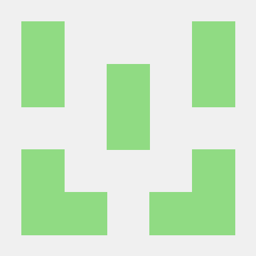
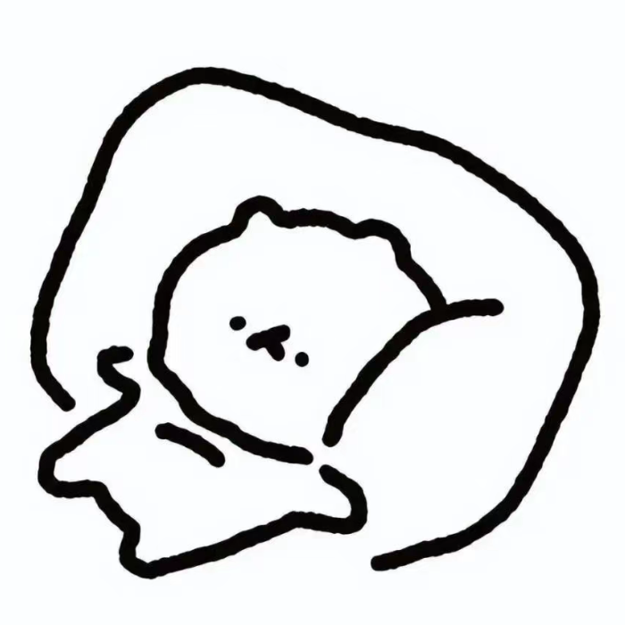

Stephen QiuI am a first-year Masters student in Robotics at the Univeristy of Pennsylvania, affiliated with GRASP Labs. My interests lies in the field of robot control and manipulators, as well as the design of embedded systems and edge device design I have an BS in Mechanical Engineering as well as a minor in Computer Science from The Univeristy of Tennessee, Knoxville, where I was a research assistant for Dr. Caleb Rucker as part of REACH Robotics Lab as well as a research assistant for Dr. Kwai Wong as a part of NICS |
  |
ResearchI'm interested in robotic manipulators, control systems, machine learning, embedded systems programming, robotics design. |

|
Flexible Techniques for Differentiable Rendering with 3D GaussiansLeonid Keselman, Martial Hebert arXiv, 2023 arxiv / code / website / We show how shape reconstruction with 3D Gaussians can be expanded to include differentiable optical flow, colored mesh exports and more. |

|
Optimizing Algorithms From Pairwise User PreferencesLeonid Keselman, Katherine Shih, Martial Hebert, Aaron Steinfeld International Conference on Intelligent Robots and Systems, 2023 arxiv / code / website / We show how to perform efficient black-box optimization of algorithm configuration from user preferences. Results include Intel RealSense stereo cameras and a robot social navigation policy. |
Other ProjectsThese include coursework and other miscellaneous projects. |

|
Discovering Multiple Algorithm Configurationstest 2023-03-14 website / code / We show the benefits of discovering an ensemble of configurations for a given algorithm during the course of optimization. Results on stereo, planning and visual odometry. |
|
Design and source code from here |